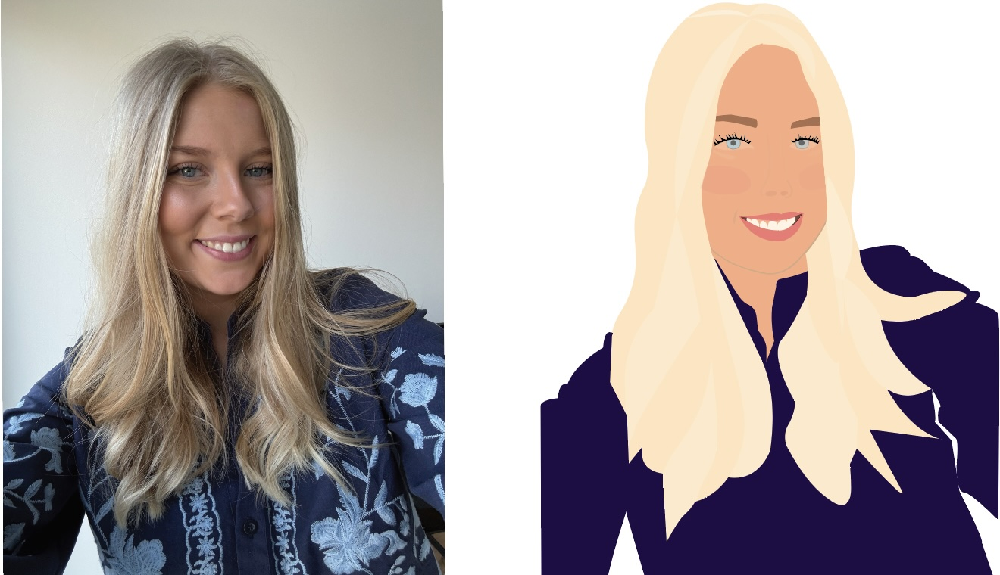

Illustration
Et digitalt selvportræt udviklet i Adobe Illustrator med fokus på formgivning, detaljer og visuel præcision.

Dette projekt blev udviklet i Adobe Illustrator med brug af Pentool som en øvelse i digital illustration og præcisionsarbejde.
Formålet var at skabe et illustreret selvportræt med fokus på former og detaljer for at opnå et realistisk udtryk.
I processen arbejdede jeg blandt andet med ansigtstræk, hår, skygger og farver for at skabe mere dybde og balance i illustrationen.
Projektet krævede stor præcision og styrkede mine kompetencer inden for formgivning og digital tegning.
Arbejdet med pentool har samtidig givet mig en større forståelse for illustration som en del af visuel identitet og branding.
Adobe Illustrator
Pentool, illustration og digital formgivning.